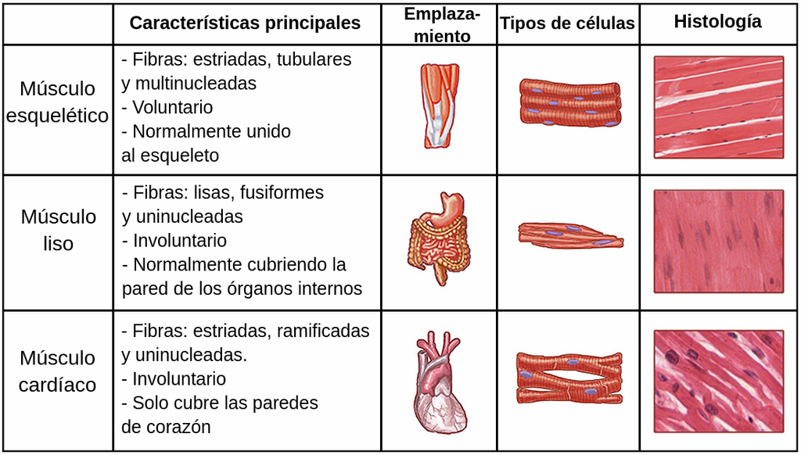
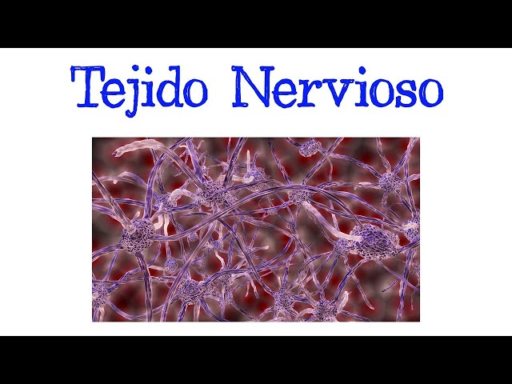

El tejido muscular está compuesto por miocitos especializados en la contracción, representando entre un 40 y 50% del peso corporal. Se clasifica en:

1. Músculo Esquelético
Fibras largas, cilíndricas y multinucleadas (núcleos periféricos).
Presenta estrías transversales visibles: bandas A (oscuras) e I (claras).
Recubierto por capas de tejido conectivo: endomisio, perimisio y epimisio.
Está bajo control voluntario y permite el movimiento, la postura, la producción de calor y la estabilidad.
2. Músculo Cardíaco
Fibras cortas, estriadas y ramificadas con uno o dos núcleos centrales.
Unidas mediante discos intercalares que permiten contracción sincronizada.
Contracción involuntaria, regulada por el marcapasos cardíaco y el sistema nervioso autónomo.
3. Músculo Liso
Formado por células fusiformes, mononucleadas, sin estrías.
Su contracción es lenta, sostenida e involuntaria.
Se encuentra en las paredes de órganos huecos como vasos sanguíneos, intestinos, útero, vejiga y vías respiratorias.
Posee uniones en hendidura (gap junctions) que permiten contracciones coordinadas.
Tipo
Estriaciones
Control
Características
Ubicación
Esquelético
Sí
Voluntario
Multinucleado, fibras largas
Huesos
Cardíaco
Sí
Involuntario
Ramificado, discos intercalares
Corazón
Liso
No
Involuntario
Fusiforme, mononucleado
Órganos huecos
Propiedades comunes del tejido muscular: excitabilidad, contractilidad, extensibilidad y elasticidad.
Tejido Nervioso

El tejido nervioso está especializado en la recepción, procesamiento y transmisión de señales eléctricas. Es el componente principal del sistema nervioso central y periférico.
1. Neuronas
Son las células funcionales del tejido nervioso.
Poseen un soma o cuerpo celular, dendritas (reciben estímulos) y axón (envía señales).
Transforman estímulos en impulsos eléctricos llamados potenciales de acción.
Se agrupan en núcleos (en el SNC) o ganglios (en el SNP).
2. Células Gliales
Brindan soporte, protección, nutrición y aislamiento a las neuronas.
Tipos:
Astrocitos: mantienen la barrera hematoencefálica.
Oligodendrocitos (SNC) / Células de Schwann (SNP): forman la mielina.